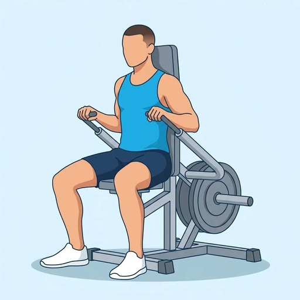
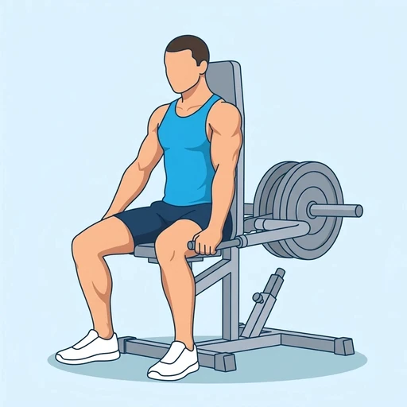
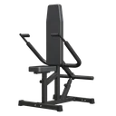

Plate-Loaded Seated Dip Machine
A plate-loaded version of the seated dip machine: you sit with your back against the pad and press two lever arms down by your sides against weight plates loaded on a sleeve behind you. It trains the triceps along the same pressing path as the selectorized dip machine, with the resistance set by the plates you load.
Upper arms · Plate-Loaded Dip Machine · Intermediate


Muscles worked by the Plate-Loaded Seated Dip Machine
Primary
Secondary
Also called: tricep, triceps, triceps brachii, horseshoe, tris.
Equipment

Plate-Loaded Dip MachineAlso called: plate-loaded dip machine, plate loaded seated dip, plate-loaded seated dip machine, leverage dip machine.
How to do the Plate-Loaded Seated Dip Machine
- Load the plates evenly on the sleeve and adjust the seat so the handles are at about shoulder height when you are seated.
- Sit upright with your back against the pad and grip the handles at your sides with your elbows bent.
- Keep your shoulders down and your chest up, then press the handles down by straightening your elbows.
- Squeeze your triceps at the bottom, with your arms straight but not locked out hard.
- Let the handles rise back up under control until your elbows are bent to about 90 degrees.
- Repeat for the planned repetitions, then return the lever to its safety stop before you stand up.
Form tips
- Start light and add plates gradually; if the handles stop short of full extension the load is too heavy.
- Keep the elbows close to your sides and your back against the pad so the work stays on the triceps.
- Do not let the shoulders roll forward or shrug as the handles rise; stop where the stretch in the chest and shoulders is comfortable.
At a glance
| Body part | Upper arms |
|---|---|
| Category | Strength |
| Force type | Push |
| Mechanic | Compound |
| Difficulty | Intermediate |
| Equipment | Plate-Loaded Dip Machine |
| Goals | Hypertrophy, Strength |
| Tags | Knee safe, No axial load, Lower back safe, Shoulder safe |
| MET | 6.0 (metabolic equivalent, for calorie estimates) |
| Unilateral | No |
| Bodyweight | No |
| Dataset id | plate-loaded-seated-dip-machine |
Plate-Loaded Seated Dip Machine in German & Spanish
| German | Sitzende Dip-Maschine mit Hantelscheiben |
|---|---|
| Spanish | Máquina de Fondos Sentado con Discos |
Descriptions, instructions and tips ship in all three languages in the JSON.
Related exercises
Exercise data (JSON)
The record below is exactly what exercises.json ships for this exercise — names, descriptions, instructions and tips in English, German and Spanish.
{
"id": "plate-loaded-seated-dip-machine",
"name_en": "Plate-Loaded Seated Dip Machine",
"name_de": "Sitzende Dip-Maschine mit Hantelscheiben",
"name_es": "Máquina de Fondos Sentado con Discos",
"description_en": "A plate-loaded version of the seated dip machine: you sit with your back against the pad and press two lever arms down by your sides against weight plates loaded on a sleeve behind you. It trains the triceps along the same pressing path as the selectorized dip machine, with the resistance set by the plates you load.",
"description_de": "Eine scheibenbeladene Variante der sitzenden Dip-Maschine: Du sitzt mit dem Rücken am Polster und drückst zwei Hebelarme seitlich neben dir nach unten, gegen Hantelscheiben, die hinter dir auf einer Aufnahme geladen sind. Sie trainiert den Trizeps auf demselben Druckweg wie die Dip-Maschine mit Gewichtsblock, wobei der Widerstand durch die geladenen Scheiben bestimmt wird.",
"description_es": "Una versión con discos de la máquina de fondos sentado: te sientas con la espalda contra el respaldo y empujas dos brazos de palanca hacia abajo a tus costados contra los discos cargados en un eje detrás de ti. Trabaja los tríceps siguiendo la misma trayectoria de empuje que la máquina de fondos con selector, con la resistencia determinada por los discos que cargues.",
"category": "strength",
"force_type": "push",
"mechanic": "compound",
"difficulty": "intermediate",
"equipment": "plate_loaded_dip_machine",
"body_part": "upper_arms",
"primary_muscles": [
"triceps_brachii"
],
"secondary_muscles": [
"anterior_deltoid",
"pectoralis_major"
],
"goals": [
"hypertrophy",
"strength"
],
"tags": [
"knee_safe",
"no_axial_load",
"lower_back_safe",
"shoulder_safe"
],
"variation_group": "dips",
"is_unilateral": false,
"is_bodyweight": false,
"instructions_en": [
"Load the plates evenly on the sleeve and adjust the seat so the handles are at about shoulder height when you are seated.",
"Sit upright with your back against the pad and grip the handles at your sides with your elbows bent.",
"Keep your shoulders down and your chest up, then press the handles down by straightening your elbows.",
"Squeeze your triceps at the bottom, with your arms straight but not locked out hard.",
"Let the handles rise back up under control until your elbows are bent to about 90 degrees.",
"Repeat for the planned repetitions, then return the lever to its safety stop before you stand up."
],
"instructions_de": [
"Belade die Scheiben gleichmäßig auf der Aufnahme und stelle den Sitz so ein, dass die Griffe im Sitzen ungefähr auf Schulterhöhe sind.",
"Setze dich aufrecht mit dem Rücken am Polster und greife die Griffe seitlich mit gebeugten Ellbogen.",
"Halte die Schultern unten und die Brust oben und drücke die Griffe dann durch Strecken der Ellbogen nach unten.",
"Spanne den Trizeps unten an, die Arme gestreckt, aber nicht hart durchgedrückt.",
"Lass die Griffe kontrolliert wieder nach oben steigen, bis die Ellbogen etwa 90 Grad gebeugt sind.",
"Wiederhole für die geplante Anzahl an Wiederholungen und bringe den Hebel dann zurück in den Sicherheitsanschlag, bevor du aufstehst."
],
"instructions_es": [
"Carga los discos por igual en el eje y ajusta el asiento para que las empuñaduras queden aproximadamente a la altura de los hombros cuando estés sentado.",
"Siéntate erguido con la espalda contra el respaldo y agarra las empuñaduras a tus costados con los codos flexionados.",
"Mantén los hombros bajos y el pecho alto, y empuja las empuñaduras hacia abajo extendiendo los codos.",
"Aprieta los tríceps abajo, con los brazos estirados pero sin bloquear los codos con fuerza.",
"Deja que las empuñaduras suban de nuevo de forma controlada hasta que los codos queden flexionados a unos 90 grados.",
"Repite el número de repeticiones previsto y devuelve la palanca a su tope de seguridad antes de levantarte."
],
"tips_en": [
"Start light and add plates gradually; if the handles stop short of full extension the load is too heavy.",
"Keep the elbows close to your sides and your back against the pad so the work stays on the triceps.",
"Do not let the shoulders roll forward or shrug as the handles rise; stop where the stretch in the chest and shoulders is comfortable."
],
"tips_de": [
"Beginne leicht und lege nach und nach Scheiben auf; stoppen die Griffe vor der vollen Streckung, ist die Last zu schwer.",
"Halte die Ellbogen nah am Körper und den Rücken am Polster, damit die Arbeit auf dem Trizeps bleibt.",
"Lass die Schultern beim Hochkommen der Griffe nicht nach vorn rollen oder hochziehen; stoppe dort, wo die Dehnung in Brust und Schultern angenehm ist."
],
"tips_es": [
"Empieza con poco peso y añade discos poco a poco; si las empuñaduras se quedan cortas de la extensión completa, la carga es demasiado pesada.",
"Mantén los codos cerca de los costados y la espalda contra el respaldo para que el trabajo se quede en los tríceps.",
"No dejes que los hombros rueden hacia delante ni se encojan al subir las empuñaduras; detente donde el estiramiento del pecho y los hombros sea cómodo."
],
"met": 6.0,
"images": {
"flat": {
"start": "images/flat/plate-loaded-seated-dip-machine-start.webp",
"peak": "images/flat/plate-loaded-seated-dip-machine-peak.webp"
}
}
}Fetch just this exercise
const { exercises } = await fetch(
"https://exercise-dataset.com/exercises.json"
).then(r => r.json());
const ex = exercises.find(e => e.id === "plate-loaded-seated-dip-machine");Free for personal and commercial in-app use with attribution (“Exercise data by RepDB”) — see the license and ready-made attribution snippets. Redistributing the data as a dataset or API is not permitted.